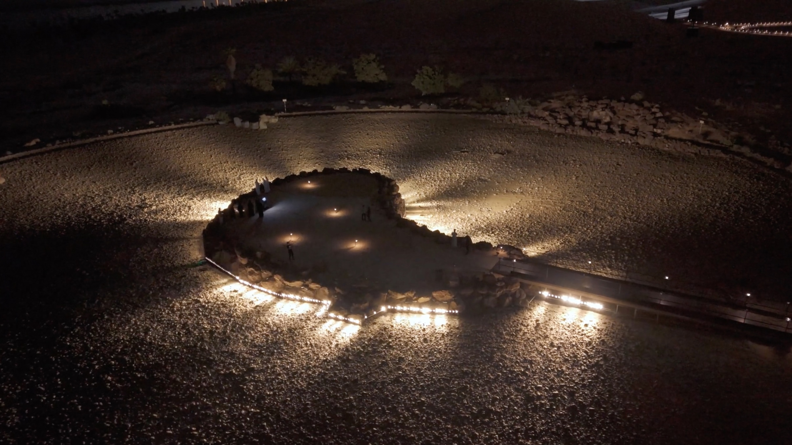
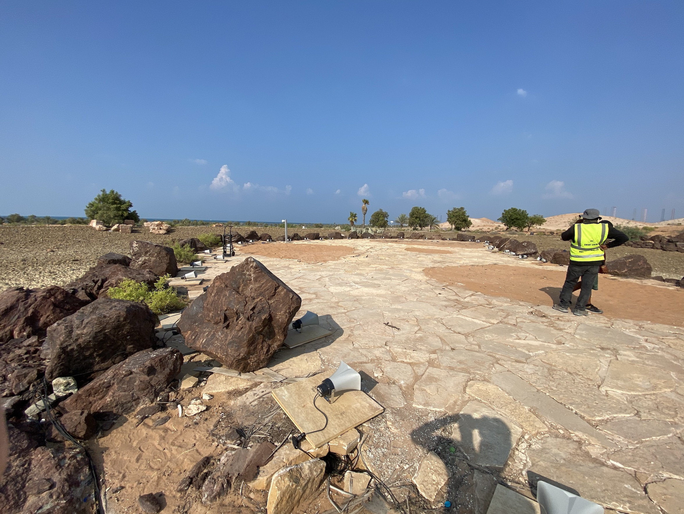
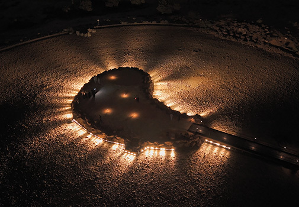

Voice Basin, 2023
| 👤 for | Rafael Lozano-Hemmer |
|---|---|
| # Year | 2023 |
| 🔗 Official Site | lozano-hemmer.com/voice_basin.php |
| 📋 I did | Software |
Hundreds of spotlights illuminate an empty lakebed on the north of Lulu Island. The beams shimmer, tuned in synchronicity with voice recordings that visitors speak into an intercom. As new recordings are added to the reservoir of voices, old ones can be heard again before they vanish altogether.



Acknowledgment
This artwork by Rafael Lozano-Hemmer is the result of the combined efforts of a talented and diverse group of professionals. Each person has contributed unique skills and expertise to the creation of this piece. For more information about the team and their roles, please visit our official website.